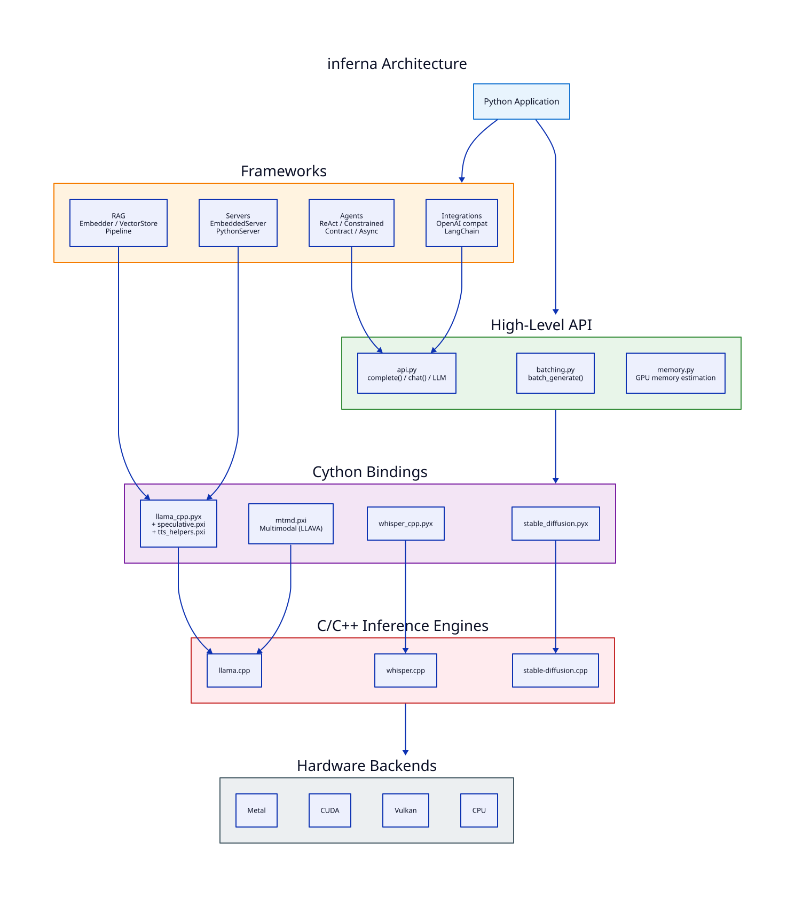

inferna overview¶
inferna is a zero-dependency Python library for local LLM inference which uses nanobind to wrap the following high-performance inference engines:
-
llama.cpp: text-to-text, text-to-speech and multimodel
-
whisper.cpp: automatic speech recognition
-
stable-diffusion.cpp: text-to-image and text-to-video
Core Features¶
-
High-level API -
complete(),chat(),LLMclass for quick prototyping -
Low-level API - Direct access to llama.cpp, whisper.cpp, and stable-diffusion.cpp internals
-
Streaming - Token-by-token output with callbacks
-
Batch processing - Process multiple prompts 3-10x faster
-
GPU acceleration - Metal (macOS), CUDA (NVIDIA), ROCm (AMD), Vulkan (cross-platform) backends
-
Memory tools - Estimate GPU layers and VRAM usage
-
OpenAI-compatible servers -
EmbeddedServer(C/Mongoose) andPythonServerimplementations
Agent Framework¶
-
ReActAgent - Reasoning + Acting with tool calling
-
ConstrainedAgent - Grammar-enforced tool calls (100% valid output)
-
ContractAgent - Pre/post conditions on tools (C++26-inspired contracts)
Additional Capabilities¶
-
Speculative decoding - 2-3x speedup with draft models
-
GGUF utilities - Read/write model metadata
-
JSON schema grammars - Structured output generation
Integrations¶
-
OpenAI-compatible API - Drop-in client replacement
-
LangChain - Full LLM interface implementation
-
ACP/MCP support - Agent and Model Context Protocols
Architecture¶
Inferna is structured as a layered stack. At the bottom, three C/C++ inference engines handle the heavy computation. nanobind bindings (_*_native.cpp files) expose these engines to Python with minimal overhead, fronted by thin Python facade modules (llama_cpp.py, whisper_cpp.py, stable_diffusion.py) that callers import. On top of the bindings, a high-level API provides simple functions like complete() and chat(), while framework modules (agents, RAG, servers, integrations) compose these primitives into higher-level capabilities.

Layer Breakdown¶
| Layer | Components | Role |
|---|---|---|
| High-Level API | api.py, batching.py, memory.py |
Simple Python interface for generation, batch processing, and memory estimation |
| Frameworks | agents/, rag/, integrations/, llama/server/ |
ReAct/Constrained/Contract agents, RAG pipeline, OpenAI/LangChain compatibility, HTTP servers |
| Native Bindings | _llama_native.cpp (+ _mtmd/_tts/_enums companion TUs), _whisper_native.cpp, _sd_native.cpp |
Direct nanobind C++ bindings reading upstream headers directly; includes multimodal, TTS, and enum constants |
| Python Facades | llama_cpp.py, whisper_cpp.py, stable_diffusion.py, embedded.py |
Re-export native classes + integer enum constants + pure-Python helpers (downloads, n-gram cache, speculative decoder) under stable import paths |
| C/C++ Engines | llama.cpp, whisper.cpp, stable-diffusion.cpp | Core inference: text generation, speech recognition, image generation |
| Hardware Backends | Metal, CUDA, Vulkan, CPU | GPU/CPU acceleration selected at build time |
Data Flow¶
- User calls a high-level function (e.g.,
complete("prompt", model_path="model.gguf")) - The API layer loads the model via the nanobind bindings, which allocate C++ context objects
- Tokens are sampled in C++ and streamed back through nanobind to Python callbacks
- Framework modules (agents, RAG) orchestrate multiple calls to the API layer, adding tool use, retrieval, or structured output on top
Key Design Decisions¶
-
nanobind over Cython/ctypes/pybind11: nanobind reads the upstream C/C++ headers directly (no parallel
.pxddeclarations to keep in sync with llama.cpp/whisper.cpp/sd.cpp bumps), gives idiomatic C++ ergonomics (std::vector,std::optional, lambdas, RAII), and produces ~6% smaller wheels than the prior Cython build. Each upstream is bound via a primary_<name>_native.cppplus optional companion TUs for sub-areas (multimodal, TTS, enum constants), all linked into one extension module per upstream. SeeNANOBIND.mdfor the migration post-mortem. -
Zero Python dependencies: The core library has no runtime dependencies beyond Python itself. Optional integrations (LangChain, OpenAI compat) import lazily.
-
Dual server strategy:
EmbeddedServerruns an in-process Mongoose HTTP server (vendored insrc/inferna/llama/server/mongoose.{c,h}and exposed through nanobind) and serves the upstream llama-server chat web UI alongside the OpenAI-compatible JSON API;PythonServeroffers a pure-Pythonhttp.serveralternative without the web UI for debugging or wheel-less environments. Both share the sameServerConfigand JSON endpoint surface.
Quick Example¶
from inferna import complete
response = complete(
"Explain quantum computing in simple terms",
model_path="models/llama.gguf",
temperature=0.7
)
print(response)
Requirements¶
-
Python 3.10+
-
macOS, Linux, or Windows
-
GGUF model files (download from HuggingFace)